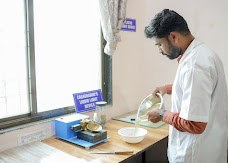
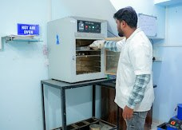
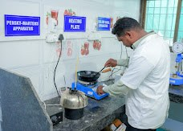
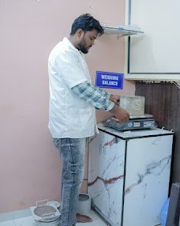
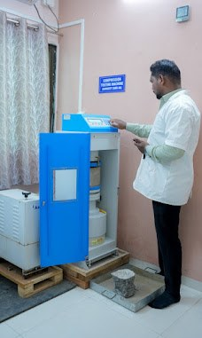
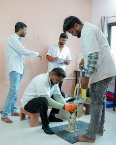

Brick Testing
Material testing support for bricks used in construction projects.
Learn more →Testing services for essential construction materials, helping builders, contractors and civil engineering professionals make informed decisions.
Based in Jalna, Maharashtra · Open Monday to Saturday
Explore the material categories handled by S.M. Testing Laboratories. Specific test methods and availability can be confirmed directly with the laboratory.
Material testing support for bricks used in construction projects.
Learn more →Testing enquiries for sand used in mortar, concrete and construction applications.
Learn more →Testing enquiries for coarse and fine aggregates used in construction.
Learn more →Testing services for cement used in building and infrastructure work.
Learn more →Testing enquiries for bituminous materials used in road works.
Learn more →Material testing support for paving blocks and related applications.
Learn more →Testing enquiries for soil used in construction and civil engineering projects.
Learn more →Photographs from S.M. Testing Laboratories in Jalna.






Tell us which material you need tested, your project requirements and your expected timeline. Our team can help you understand the next steps.
Call the laboratory to discuss the material, test requirements and sample submission.